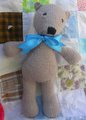

|
||
Premium Patterns Wintry Mix Mitts Love Bytes HawkeyeFree Patterns Kiddie Cadet Summerlin Ruffled Scarf Seamless DS Sock Simply Seamless Pouch Myriads of MushroomsExtras DIY Mitten Blocker Felt Patch Tutorial Yarn Dyeing Tutorial Needle Pouches Knitting Journal |
April 23, 2008 - Posted by Alice SchneblyOtto the BearProject Specs Say hello to Otto! As you guys know I’m a total sucker for knit toys so when Ysolda released this pattern I had to snatch it up. This bear is quite different looking than other bear patterns out there which really intrigued me. I’ve also heard great things about Ysolda’s other totally seamless toy patterns so I decided to give this guy a go. I was pleasantly surprised at how quickly this guy knit up and really it probably would have gone faster if I wouldn’t have been alternating between knitting this and working on the dress pattern. I love that there are no seams at all! The only time it was fiddly to work was during the first few rows of the second leg. It was a little difficult to wrangle the DPNs and knit without the first leg getting in the way. It’s definitely worth it though. I love how his legs come seamlessly off the body and the construction of the crotch gusset is pretty genius. Overall I’d recommend this pattern to anyone who likes to knit toys. It might not be for the beginner knitter though because the whole toy is knit on DPNs and there are lots of picked up stitches. I made a couple minor changes while knitting Otto. The first time I knit the head pattern as written my Otto turned out looking like an anteater! The snout was way too long for my liking. Although my stitch gauge was right on, my row gauge was slightly off (8 rows/inch instead of 9) which was probably part of the problem. I ended up reknitting the nose and taking out the plain knit rounds on the final set of decreases. I also pulled my stitches together at the end of the nose and the ears instead of grafting, and added a little mouth to my Otto. Overall I’m pretty happy with how Otto turned out. He’s really growing on me. When I first finished him I wasn’t totally content with how he looked. For some reason I can never get my SSKs to look that great the whole line of them right on top of the head sticks out like a sore thumb. If anyone has any suggestions on a better looking left slanting decrease, please let me know! It also seems like the yarn I used makes the increases and decreases even more pronounced than usual. Next time I knit this pattern I think I’ll use a yarn that is less smooth and has more of a halo to disguise my increases and decreases a bit. Also I found this yarn to be pretty splitty while working with it. I used this yarn for Camdyn’s clapotis as well and I don’t remember it being this bad. I’ve also already had to pick some pills and fuzz off the top of Otto’s head. Hopefully he doesn’t end up too pill covered! Otto is a gift for my niece, Jojo, who turns one year old tomorrow! You may remember I was planning on knitting the Moderne Baby Blanket for her birthday but I never picked it back up after my early progress on it. I will finish it up eventually and save it for another occasion. My older sister and her family are actually talking about moving to Las Vegas, so maybe it will be a welcome to Vegas present! Thanks for all the nice comments you left for Camdyn’s dress the other day! I’m going to get back to work on the pattern today. I hope to have the majority of it done by this weekend so I will probably be back then asking for some advice on a couple of the sizes. Right now I’m planning on writing up the pattern for 12 months to 5 years, so hopefully there will be something for everyone! |
   Recent ReviewsRecent Posts
 Our Favorites
|
| © 2007 KathrynIvy.com | ||
{kind=link}
{kind=link}
{kind=link}